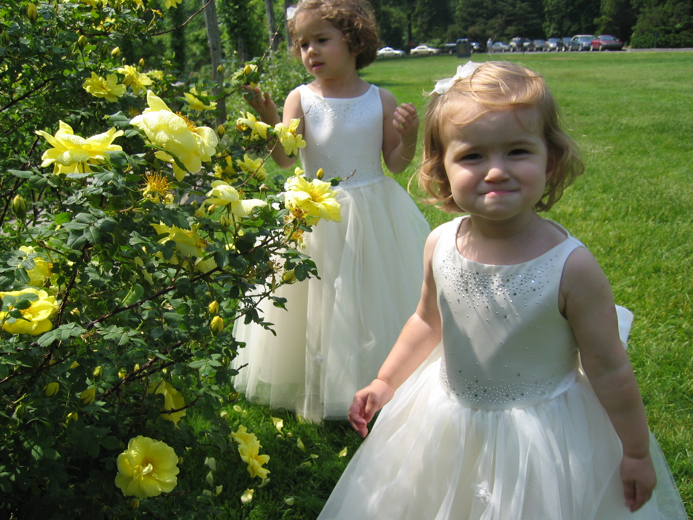
Me as a flowergirl when I'm like 2
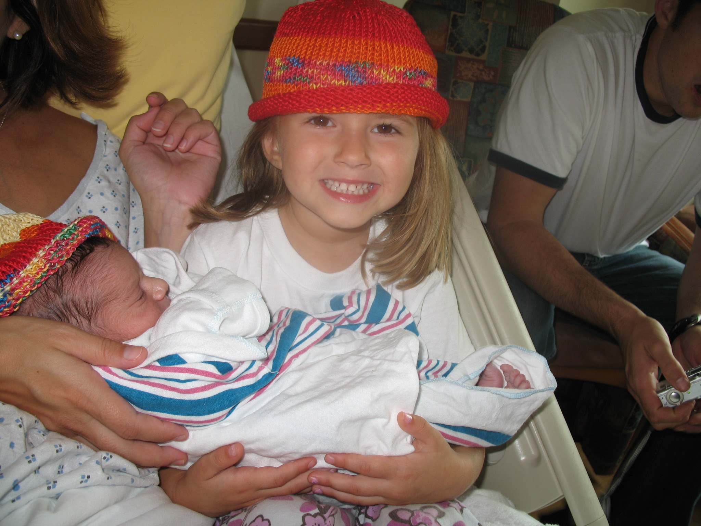
Me stunting with this homemade hat with my newborn brother
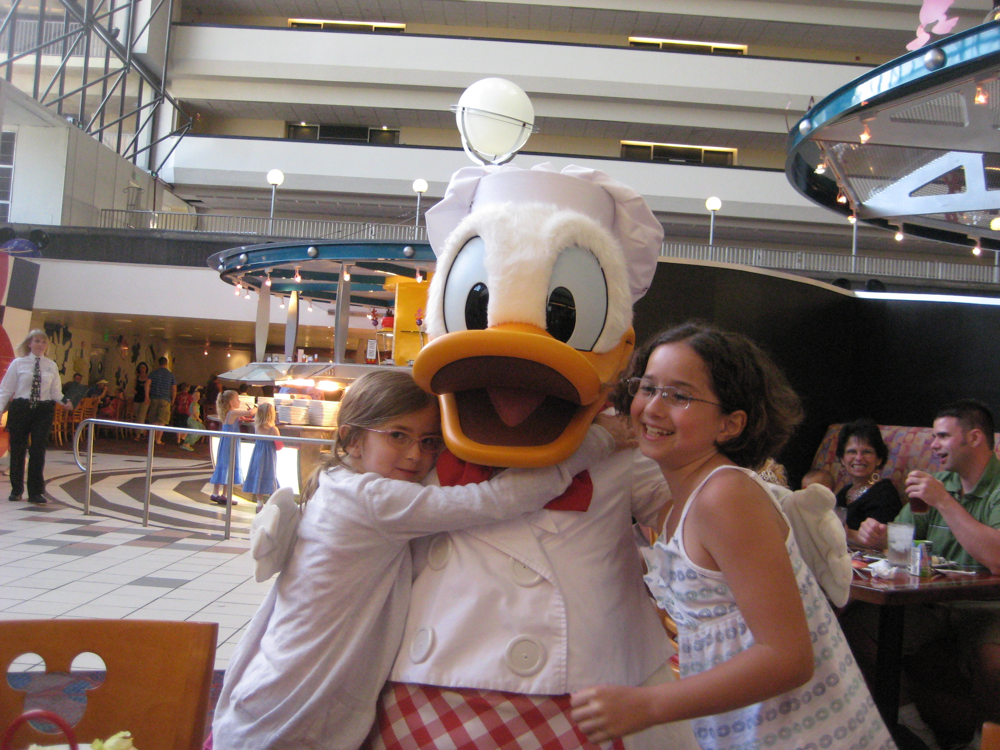
I was a huge Donad Duck fan as a kid, obviously I was possesive of him
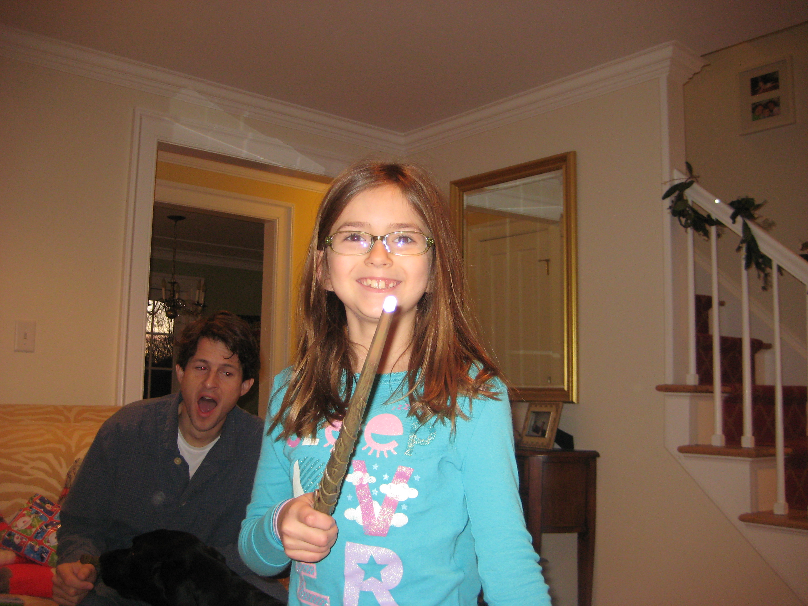
I was Hermione for Halloween two years in a row
My Middle School Years
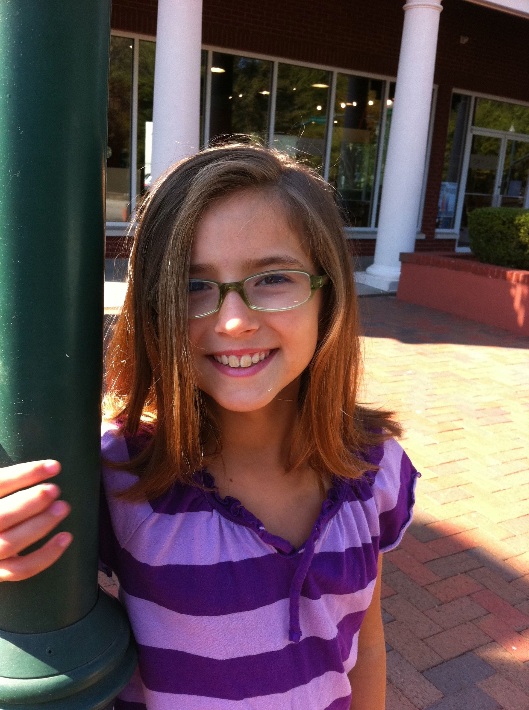
I took a mental health day from sixth grade this day because I couldn't pick out an outfit, and switched to a side part
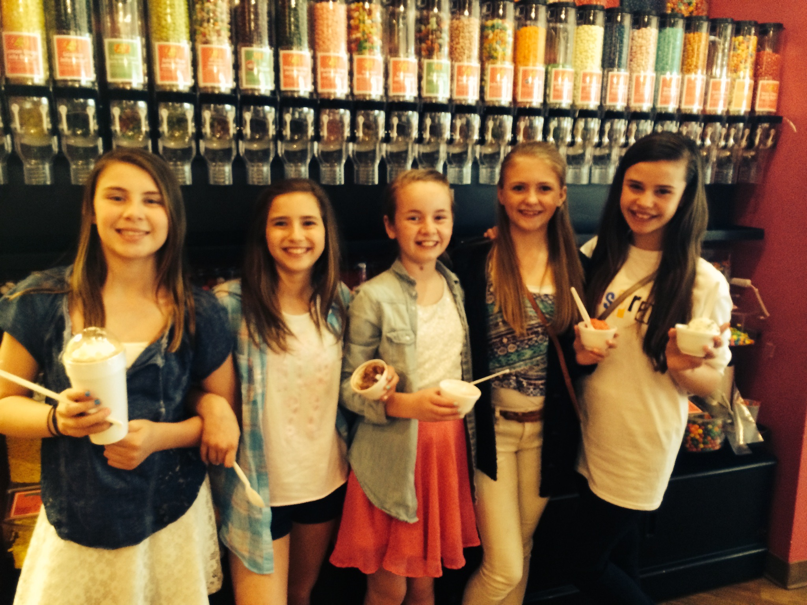
This place was called Scoops, it was the Friday after school SPOT
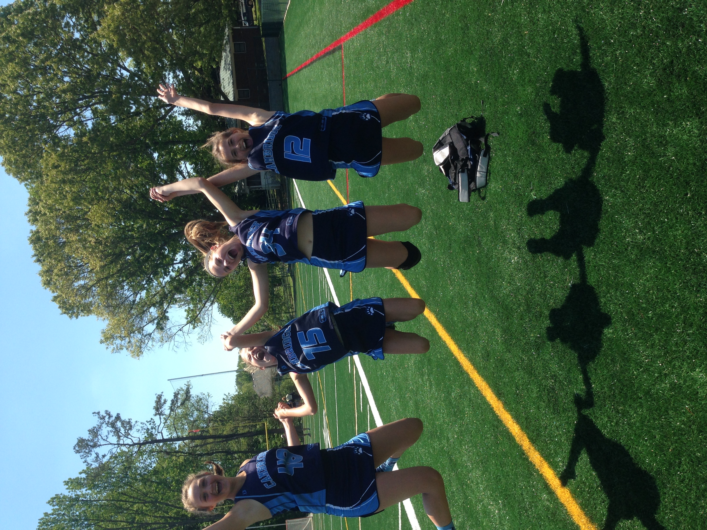
I played defense on my feeder lacrosse team (lax is life)
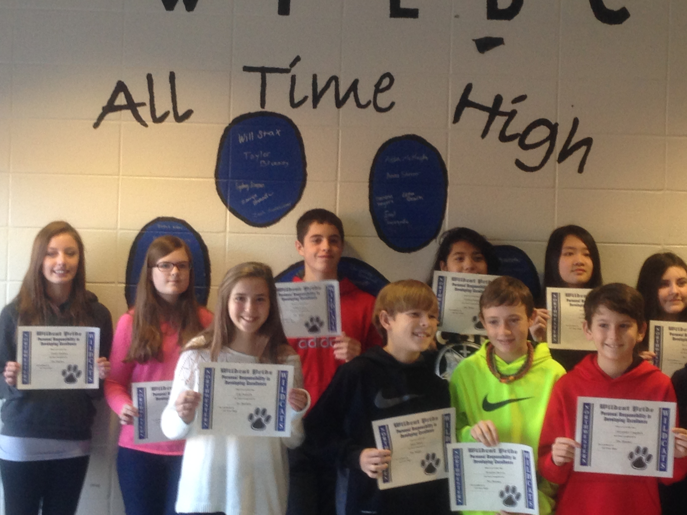
I got to sign the "Pride Wall" at school for being an excellent student
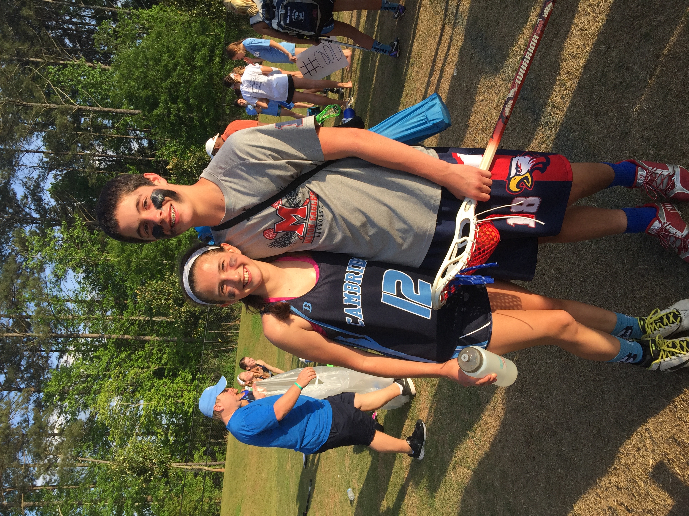
Me with my middle school boyfriend, Will, after my lacrosse game (He came to cheer me on)
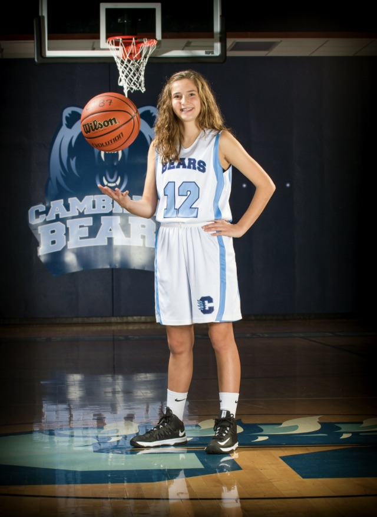
I did feeder basketball because all my friends were, I avereged 12 points a season but I was a starter
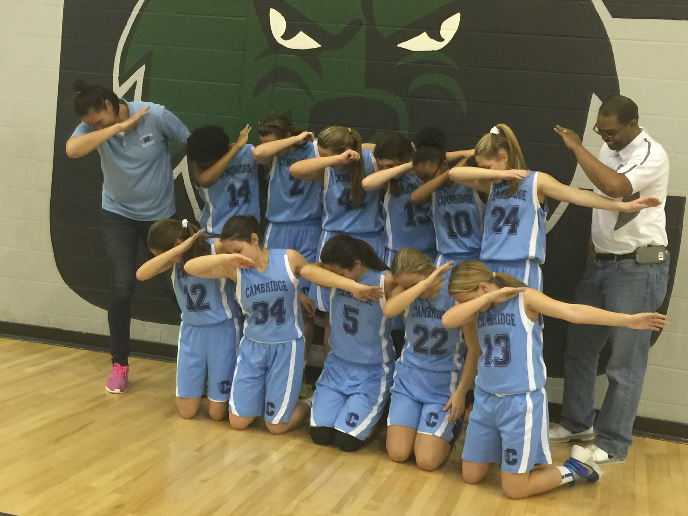
If this picture doesn't sum up this era of the mid 2010's idk what does